Geräteeigenschafteneditor
Über das Gerätemenü oder als eigenständige Anwendung aufgerufen lassen sich neue oder vorhandene Geräteeigenschaftendateien erstellen oder anpassen. Hiermit werden die Geräte XML Dateien verändert. 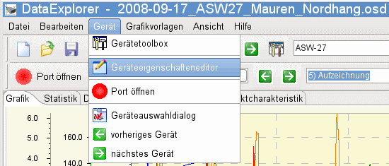
Über das Menü kann eine Gerätedatei direkt geöffnet werden. Ist das der Fall, wird die Gerätedatei des aktuellen Gerätes geladen und ein Ändern der Datei ist möglich, wobei nit alle Eigenschaften direkt auf existierende Daten wirken. Wird der DevicePropertiesEditor als eigene Anwendung gestartet kann der Name, falls bekannt kann auch direkt eingegeben werden. Ist der Name der Datei nicht im Geräteordner enthalten, geht die Anwendung davon aus das eine neue Gerätedatei angelegt werden soll und fragt danach. 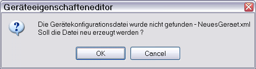 Hierbei wird dann eine Beispieldatei extrahiert, die dann angepasst werden kann. Durch Selektion des Knopfes auf der rechten Seite, kann über einen Dateiauswahldialog die Gerätedatei geöffnet werden.
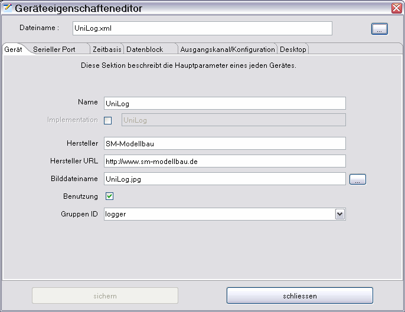
Der Gerät Tabulator zeigt wie man Name und Herstellerangaben einträgt.
Schaltet man die Implementierung aktiv, muss hier die Geräteklasse als Klassenname oder mit package.Klassenname, als voll qualifiziert, eingetragen werden.
Eine Implementierung kann immer dann verwendet werden, wenn ein Gerät schon implementiert ist, nur der Name nicht passt.
Als Beispiel soll hier der CSV2SerialAdapter genannt werden, Unterschiede bestehen nur in der Spezifikation des Datentextblocks.
Als weiteres Beispiel können die vielen Kopien der Bantam Ladegeräte herangezogen werden, die sich im Aussehen und Namen unterscheiden.
Hier möchte man die Daten doch unter seinem Gerätenamen abgelegt vorfinden.
 Gibt man das 'package' nicht an beginnt das 'package' immer mit "osde.device.", gefolgt vom Namen des Herstellers in Kleinbuchstaben umgewandelt, wobei Leerzeichen sowie Bindestriche entfernt werden.
Aus dem Gerätenamen wird der Klassenname ebenfalls durch entfernen von Leerzeichen und Bindestrichen berechnet.
Die Groß-, Klein-Schreibung wird für den Klassennamen allerdings beibehalten.
Gibt man das 'package' nicht an beginnt das 'package' immer mit "osde.device.", gefolgt vom Namen des Herstellers in Kleinbuchstaben umgewandelt, wobei Leerzeichen sowie Bindestriche entfernt werden.
Aus dem Gerätenamen wird der Klassenname ebenfalls durch entfernen von Leerzeichen und Bindestrichen berechnet.
Die Groß-, Klein-Schreibung wird für den Klassennamen allerdings beibehalten.
Der Bildname kann von Hand eingegeben werden, falls auf ein, im Geräte Plug-in, vorhandenes Bild in der Geräteauswahl angezeigt werden soll.
Wird über den Knopf auf der rechten Seite eine Bilddatei ausgewählt, wird diese sofort auf die erforderliche Größe (225x165) skaliert.
Hierbei wird auch angeboten, die Bilddatei sofort in das Geräte Plug-in einzupacken.
Dies kann aber nur in einem temporären Ordner geschehen, da nur hier Schreibrechte garantiert sind.
Gegebenenfalls muss später das Plug-in in den Anwendungsordner kopiert werden.
 Genaue Anweisungen, wo sich das modifizierte Plug-in befindet und wo es auszutauschen ist, werden als Messagebox angezeigt.
Genaue Anweisungen, wo sich das modifizierte Plug-in befindet und wo es auszutauschen ist, werden als Messagebox angezeigt.
Hinweis : Diese Änderung geht bei einem Anwendungsupdate verloren. Gegebenenfalls selbst für eine Sicherung sorgen.
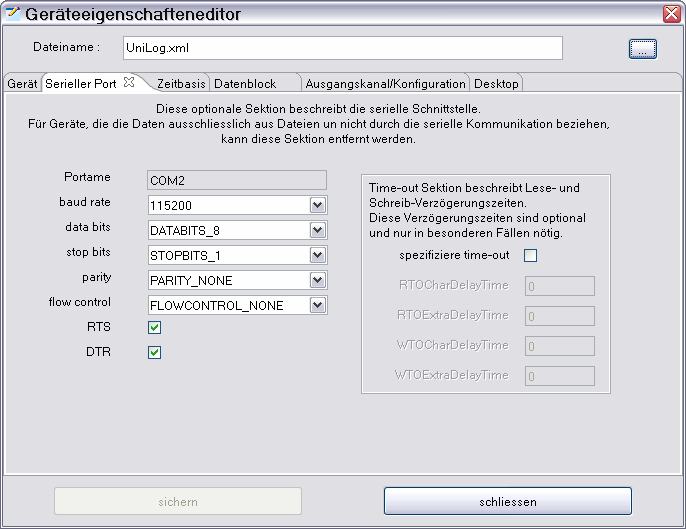 Für den seriellen Port sind die entsprechenden Konfigurationsparameter einzutragen. Da hier alle Auswahlmöglichkeiten über Auswahldialoge eingestellt werden sind weitere Hinweise nicht nötig.
Hinweis : Werden Timeoutzeiten angegeben muss die Implementierung so geschrieben sein, dass diese auch benutzt werden. Die Beschreibung der seriellen Schnittstelle ist optional, weil es Geräte gibt, die einen virtuellen seriellen Input über Textdaten erhalten. Beispielsweise haben Geräte die das CSV2SerialAdapter Plug-in benutzen keine serielle Schnittstelle.
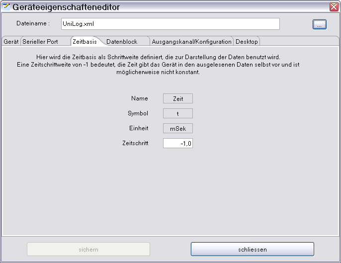 Die Zeitbasis zu konfigurieren ist einfach. Ein Wert größer 0 Millisekunden als Zeitabstand zwischen den Messpunkten wird als konstanter Zeitabstand angenommen. Bei einem Zeitwert kleiner 0 Millisekunden, wird davon ausgegangen, dass das Gerät die Zeit vorgibt. Das muss nicht heißen, dass der Abstand zwischen den Messpunkten konstant ist. Vorrangig muss hier die Geräteimplementierung das Richtige daraus machen.
Hinweis : Das UniLog, als Beispiel, hat einen einstellbaren und damit veränderlichen aber konstanten Zeitabstand zwischen den Messpunkten. Damit ist für die Zeitbasis -1 einzustellen. Schlussendlich muss aber auch hier die Geräteimplementierung für das richtige Verhalten sorgen, den Zeitwert bei jedem Auslesevorgang von Daten ermitteln und für diesen Datensatz konstant verwenden.
Hier werden 2 verschiedene Datenblockkonfigurationen gegenübergestellt. Die UniLog Konfiguration beschreibt binäre Daten der konstanten Größe von 24 Byte. Sollte die maximale Anzahl von Datenbytes 24 betragen, können als auch mal nur z.B. 20 Bytes zur Verfügung stehen, müsste hier -24 eingetragen werden. Dadurch, dass als Datentyp BINARY gewählt ist können auch keine Trennzeichen eingegeben werden. 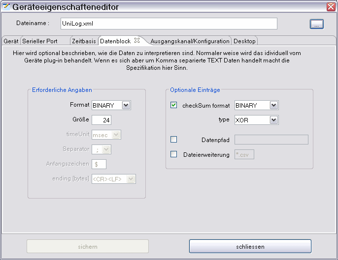 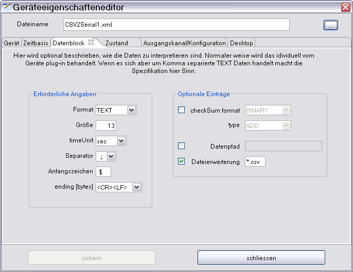 Ist als Datentype TEXT gewählt müssen zusätzliche Konfigurationsdaten angegeben werden, die zum verwerten der Daten benötigt werden. Interessant sind auch die Dateiendung, die die Dateisuche einschränkt, sowie der Dateipfad, der ein Standardverzeichnis spezifiziert, wo die Daten erwartet werden. Beides sind optionale Angaben, helfen aber, wenn Daten, wie bei dem DataVario von WStech auf einer Speicherkarte angeliefert werden, die beim einstecken in den Computer einen bestimmten Laufwerkspfad annimmt.
Hinweis : Auch diese Konfiguration ist optional, die individuelle Geräteimplementierung könnte das alles behandeln.
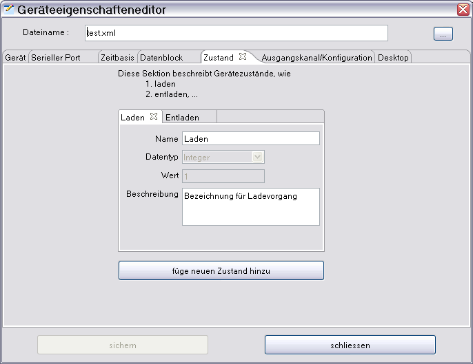 Auf der Zustand-Tabulatorseite werden optional die Zustände beschrieben, die ein Gerät einnehmen kann. Diese Beschreibung macht hauptsächlich Sinn, wenn ein Gerät mehr wie einen Zustand einnehmen kann oder die Daten über eine Textdatei (CSV2SerialDataAdapter) eingelesen werden. Die Geräteimplementierung bestimmt wie die sequenziell angeordneten Zustände anzuwenden sind.
Hinweis : Werden die Daten über eine Textdatei (CSV2SerialDataAdapter) eingelesen, so wird als Zustand 1, wie abgebildet Laden ($1;1;Zeit;Daten;..), und als Zustand 2 Entladen ($1;2;Zeit;Daten;..) verwendet.
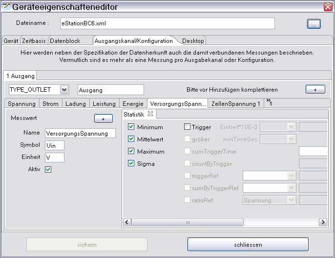 Die Tabulator mit der Beschriftung "Ausgangskanal/Konfiguration" ist die komplizierteste und umfangreichste Konfigurationsseite. Hier werden, wenn erwünscht oder nötig, die Ausgänge von einem Gerät (entsprechen einem Datenkanal) beschreiben oder eben verschiedene Konfigurationen, die auf die Datensätze angewendet werden sollen. Es gibt also, wie beschrieben, 2 Kanal-Konfigurationstypen, zwischen den entschieden werden muss. Bei einem Ladegerät, an dem zu einer Zeit nur ein Akku geladen werden kann, hat auch nur einen Ausgang, an dem der Akku angeschlossen wird. Es wird auch nur ein Ausgang als Datenkanal beschrieben. Das ist in nebenstehenden Beispiel beschrieben. Unterhalb der Leiste, über die man den Type und den Namen der Kanal-Konfiguration auswählen kann, befindet sich der Tabulatorbereich, der die einzelnen Messwerte beschreibt. Die Messwertbeschreibung und Konfiguration bestimmt deren Anzeige einschließlich der Einheitenberechnung, sowie nimmt Einfluss auf die statistische Auswertung. Hinweis : Wählt man Konfiguration (TYPE_CONFIG) als Type können unterschiedliche Konfigurationen auf ein und dieselben Daten angewendet werden. Möchte man Kanal/Konfigurationen kopieren, um sie zu vervielfältigen ist es sinnvoll die zugehörigen Messwerte und deren Beschreibungen vorher zu vervollständigen.
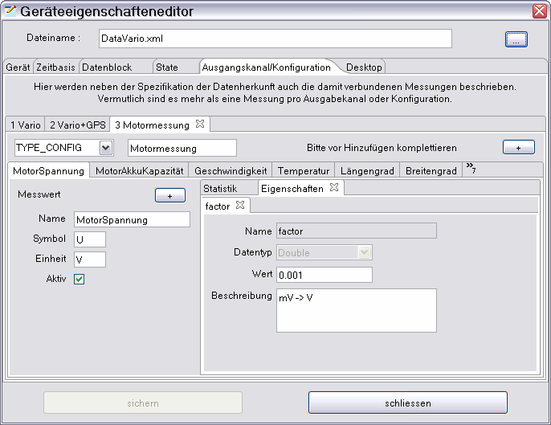 Messwerte beschreibt man mit dem Namen, welche Einheit sie besitzen, welche Symbol verwendet werden soll und ob sie aktiv aus dem Gerät ausgelesen werden können, oder ob sie durch Berechnung entstehen. Des weiteren gibt es optionale Eigenschaften, z.B. über Faktor, Offset und Reduktion die Anzeige der (Roh-)Daten beeinflussen.
Hinweis : Benötigt man weitere Eigenschaften oder Statisikeinstellungen kann man diese durch das Kontextmenü anfordern. Nach der Vervollständigung kann man dann die gerade fertiggestellte Messwertkonfiguration in eine Neue, durch Selektion des +Knopfes, kopieren. Zu den Eigenschaften (Properties) ist wenig zu sagen, da hier nur vorbestimmte ausgewählt werden können und nur noch der Wert entsprechend anzupassen ist.
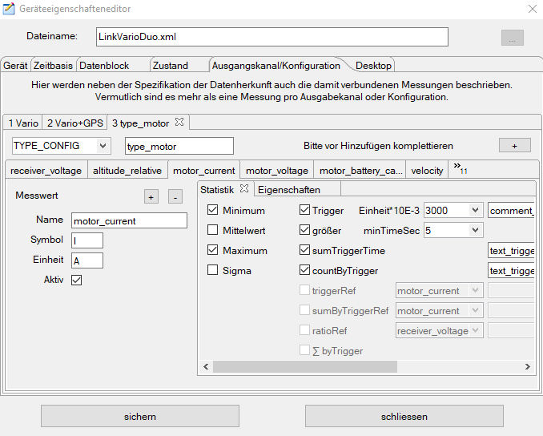 Hier wird ein Statistikbeispiel gezeigt, das nicht nur die zu berechnenden Werte beschreibt, sondern auch einen Schwellwert (Trigger) , der über Größe und Zeit einen Auswertebereich festlegt. Außerdem wird bestimmt, dass die Zeit, an der der eingestellte Schwellwert wirksam wird, aufsummiert werden soll. Hieraus kann dann, wie im Beispiel, die wirkliche Motorlaufzeit berechnet werden. Zusätzlich wird eingestellt, dass die Anzahl der Ereignisse gezählt werden soll.
Hinweis : Zu den meisten Schwellwert bezogenen Einstellungen gibt es die Möglichkeit Kommentare hinzuzufügen. Das ist für die Lesbarkeit von großem Vorteil (Statistik Anzeige).
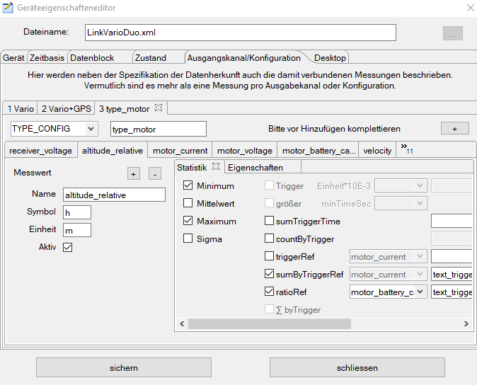 Hier wird gezeigt, wie die Auswertung eines anderen Messwertes durch einen bereits definierten Schwellwert (Trigger) beeinflusst werden kann. In dem gezeigten Beispiel wird durch die Anwahl von "sumByTriggerRef" ausschließlich die Höhe aufsummiert, die im definierten Schwellwert gewonnen wurde. Jetzt zeigt sich wie gut eine Luftschrauben-, Motor-Anpassung vorgenommen wurde, beziehungsweise es lassen sich jetzt wirkliche nachvollziehbare Vergleiche anstellen. Zusätzlich wird hier gezeigt, wie hier eine Verhältnismäßigkeit gebildet werden kann, die ein Verhältnis der verbrauchten Akkukapazität zur erreichten Höhe darstellt. Auch das erlaubt gewisse Aussagen über die Anpassung der zur Verfügung stehenden Leistung zur Ausgenutzten.
Hinweis : Weitere Konfigurationsbeispiele findet man beim UniLog oder DataVario.
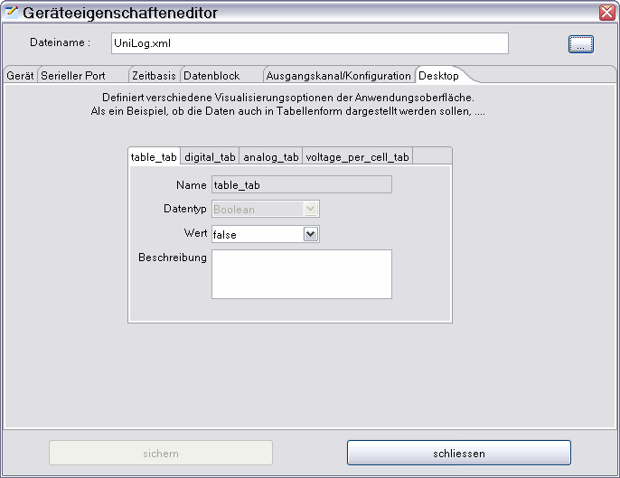 Als letzte fehlt noch die Beschreibung, was mit der Desktopkonfiguration gemeint ist. Hier wird initial konfiguriert, welcher Anzeigetabulator aktiv geschaltet werden soll. Aktiv bezieht sich auf die Sichtbarkeit selbst, sowie auf den Zeitbedarf, der zur eigentlichen Anzeige, der auf dem Tabulatorfenster befindlichen Daten, verbraucht wird.
Hinweis : Initiale Konfiguration meint, dass über die DataExplorer Anwendung selbst, im Geräteauswahldialog, diese Konfiguration beeinflusst wird.